graphics.off()
rm(list = ls())
gc() used (Mb) gc trigger (Mb) limit (Mb) max used (Mb)
Ncells 602107 32.2 1370178 73.2 NA 700254 37.4
Vcells 1113563 8.5 8388608 64.0 16384 1963366 15.0Sean Ahn
September 12, 2024
In today’s post, we will learn how to show multiple distribution states in one plot.
Sometimes we need to show the distribution of data according to more than one variable in one plot.
It’s not easy to fit a lot of data into a single plot, but it’s even harder to convey the data to the reader quickly and accurately.
I usually use the following code for initialization. If you don’t want to remove plots and/or variables, you can skip it.
used (Mb) gc trigger (Mb) limit (Mb) max used (Mb)
Ncells 602107 32.2 1370178 73.2 NA 700254 37.4
Vcells 1113563 8.5 8388608 64.0 16384 1963366 15.0We want to use as few packages (some might call them “libraries”) as possible. If possible, I’m going to use only the tidyverse package. Tidyverse is one of the most famous packages in R programming, and it’s really powerful and useful.
── Attaching core tidyverse packages ──────────────────────── tidyverse 2.0.0 ──
✔ dplyr 1.1.4 ✔ readr 2.1.5
✔ forcats 1.0.0 ✔ stringr 1.5.1
✔ ggplot2 3.5.1 ✔ tibble 3.2.1
✔ lubridate 1.9.3 ✔ tidyr 1.3.1
✔ purrr 1.0.2
── Conflicts ────────────────────────────────────────── tidyverse_conflicts() ──
✖ purrr::%||%() masks base::%||%()
✖ dplyr::filter() masks stats::filter()
✖ dplyr::lag() masks stats::lag()
ℹ Use the conflicted package (<http://conflicted.r-lib.org/>) to force all conflicts to become errorsWhen I write posts in my blog, I use the built-in dataset because I don’t want the reader to suffer by having to find the data from somewhere else.
The dataset I’ll be using in this post is shown below ⬇️ ⬇️ ⬇️.
Edgar Anderson’s Iris Data
Description. This famous (Fisher’s or Anderson’s) iris data set gives the measurements in centimeters of the variables sepal length and width and petal length and width, respectively, for 50 flowers from each of 3 species of iris. The species are Iris setosa, versicolor, and virginica.
Usage
iris
iris3
Format
iris is a data frame with 150 cases (rows) and 5 variables (columns) named Sepal.Length, Sepal.Width, Petal.Length, Petal.Width, and Species.
iris3 gives the same data arranged as a 3-dimensional array of size 50 by 4 by 3, as once provided by S-PLUS. The first dimension gives the case number within the species subsample, the second the measurements with names Sepal L., Sepal W., Petal L., and Petal W., and the third the species.
Source
Fisher, R. A. (1936) The use of multiple measurements in taxonomic problems. Annals of Eugenics, 7, Part II, 179–188. doi:10.1111/j.1469-1809.1936.tb02137.x.
The data were collected by Anderson, Edgar (1935). The irises of the Gaspe Peninsula, Bulletin of the American Iris Society, 59, 2–5.
References
Becker, R. A., Chambers, J. M. and Wilks, A. R. (1988) The New S Language. Wadsworth & Brooks/Cole. (has iris3 as iris.)
Sepal.Length Sepal.Width Petal.Length Petal.Width Species
1 5.1 3.5 1.4 0.2 setosa
2 4.9 3.0 1.4 0.2 setosa
3 4.7 3.2 1.3 0.2 setosa
4 4.6 3.1 1.5 0.2 setosa
5 5.0 3.6 1.4 0.2 setosa
6 5.4 3.9 1.7 0.4 setosairis dataset is a grouped dataframe object.
I make df variable then store iris dataframe.
To keep original dataset, duplication is one of the best way.
take a look dataset quickly.
Rows: 150
Columns: 5
$ Sepal.Length <dbl> 5.1, 4.9, 4.7, 4.6, 5.0, 5.4, 4.6, 5.0, 4.4, 4.9, 5.4, 4.…
$ Sepal.Width <dbl> 3.5, 3.0, 3.2, 3.1, 3.6, 3.9, 3.4, 3.4, 2.9, 3.1, 3.7, 3.…
$ Petal.Length <dbl> 1.4, 1.4, 1.3, 1.5, 1.4, 1.7, 1.4, 1.5, 1.4, 1.5, 1.5, 1.…
$ Petal.Width <dbl> 0.2, 0.2, 0.2, 0.2, 0.2, 0.4, 0.3, 0.2, 0.2, 0.1, 0.2, 0.…
$ Species <fct> setosa, setosa, setosa, setosa, setosa, setosa, setosa, s…Now we know that this dataset contains data on three different types of species, and we want to visualize how they are distributed across the different Species types.
The simplest way is to use the default function hist().
This is actually quite good, and depending on how you preprocess your data, it can lead to some very powerful visualizations.
However, the visualization is not suitable for viewing the distribution of different variables.
If you want to see the distribution of sepal width by species in the iris dataset, the hist() function has its limitations.
Of course, it’s not without its challenges.
You can also use the for() function to create multiple plots showing the distribution of density variable by Run type, as shown below. However, this is a one of possible solutions, not a good solution.
We’re going to find a way to make it work.
# Tree별로 히스토그램 생성
unique_species <- unique(df$Species)
for (species in unique_species) {
subset_data <- df[df$Species == species, ]
hist(subset_data$Sepal.Width,
breaks = seq(1.0, 8.0, 0.5),
main = paste("Sepal length of ", species, "density"),
xlab = "Sepal length",
ylab = "Frequency")
}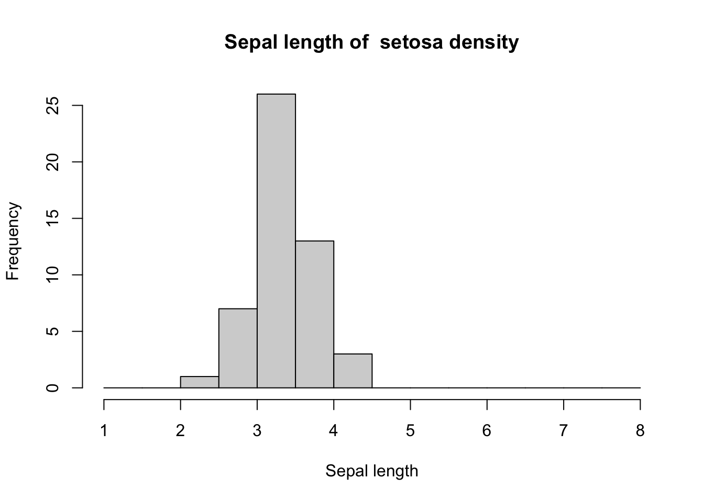
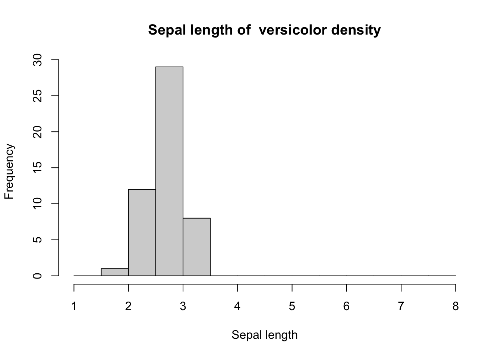
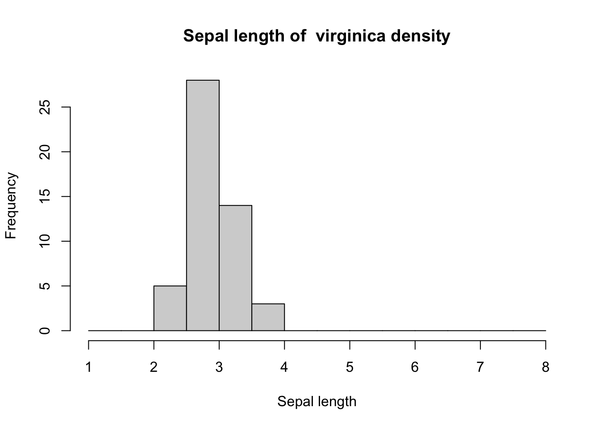
While it is possible to plot density plots for each species, these histograms are not sufficient if you need to compare between species or with the whole population.
To find another way, let’s use the ggplot() package for a more comfortable visualization.
`stat_bin()` using `bins = 30`. Pick better value with `binwidth`.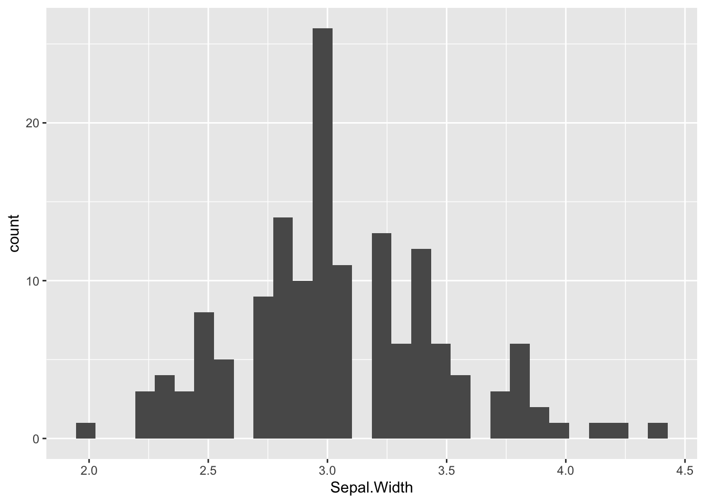
If we want to know the distribution, histograms are a great way to do so, but when we need to compare the whole or compare different variables, histograms alone are not very informative.
For example, if the two distributions are similar, or if the front layer shows larger values, or if the distribution is based on only one variable, as shown below, the comparison becomes more difficult. This is the case for sepal widths greater than 4 cm in the plot below.
ggplot(df, aes(x = Sepal.Width)) +
geom_histogram(fill = "gray", color = "black", binwidth = 0.25, alpha = 0.5) +
geom_histogram(data = subset(iris, Species == "setosa"),
aes(x = Sepal.Width),
fill = "blue",color = "black", binwidth = 0.25, alpha = 0.5) +
labs(title = "Sepal Width distribution",
subtitle = "Note. gray color shows overall data, blue color shows setosa only",
x = "Sepal Width (cm)", y = "Count")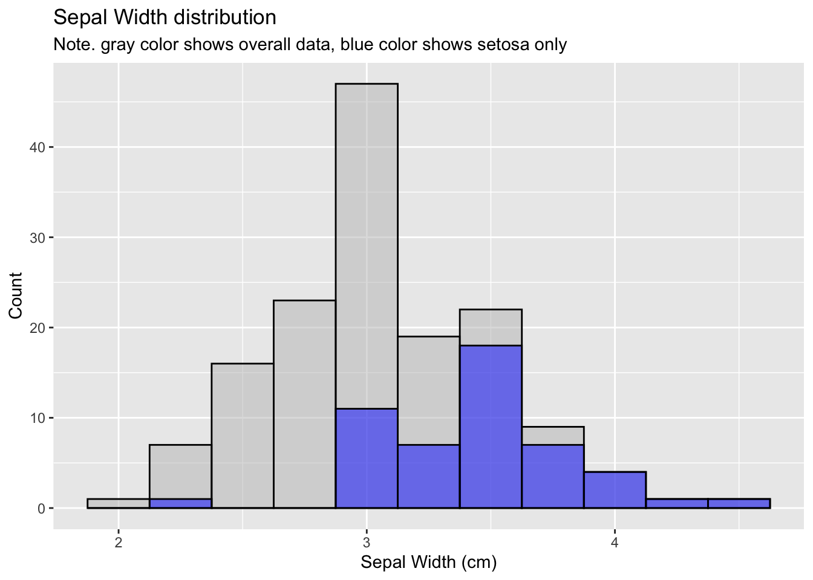
It is recommended to use a nested density plot rather than a nested histogram to compare two pieces of data or two variables.
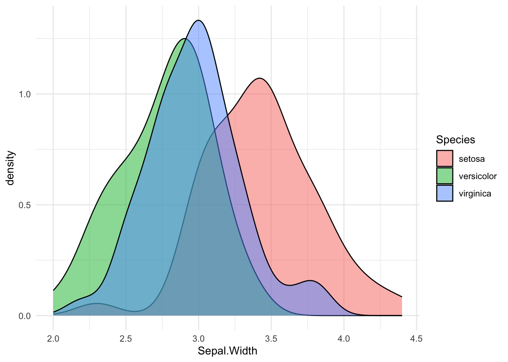
One thing to note when plotting a density plot is that the position setting must be entered as “stack”.
The default value is “jitter”, which means that the x-values are offset from their actual positions to make them more comparable, as shown above.
This makes it difficult to compare the distribution of the actual data, so it’s important to enter position = “stack”.
Below is the official documentation of ggplot2 for those who want to know more details.
https://ggplot2.tidyverse.org/reference/geom_density.html
https://ggplot2.tidyverse.org/reference/layer_positions.html
df |>
ggplot() + geom_density(aes(x = Sepal.Width, fill = Species), alpha = 0.5, position = "stack") +
theme_minimal()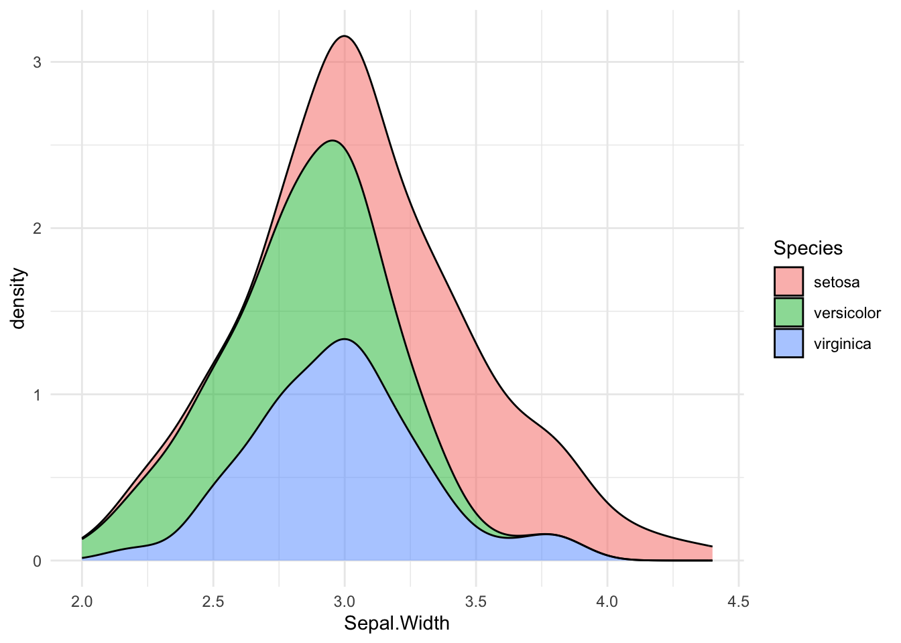
It is common to use the filter() function to extract only the variables that need to be compared.
df |> filter(Species != "virginica") |>
ggplot() + geom_density(aes(x = Sepal.Width, fill = Species), alpha = 0.5, position = "stack") +
theme_minimal() 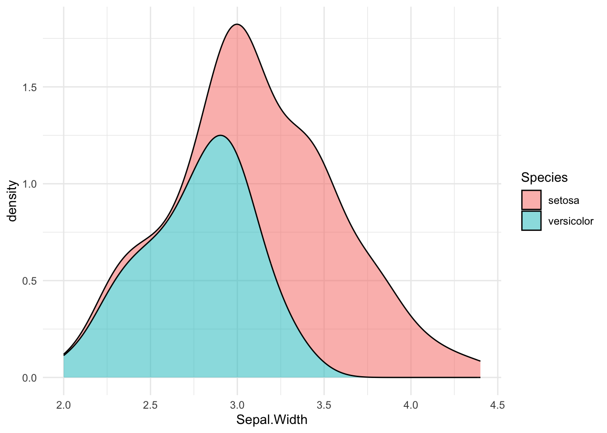
If you want to exclude one of the three variables and compare the remaining two variables, you can get the remaining data after excluding the variables you don’t need, as shown above, but sometimes you may be dealing with data that has many variables that you want to exclude.
In this case, you can still use the filter() function, but you can use operators to simplify the process of extracting only the data you need.
df |> filter(Species == "setosa" | Species =="virginica") |>
ggplot() + geom_density(aes(x = Sepal.Width, fill = Species), alpha = 0.5, position = "stack") +
theme_minimal() 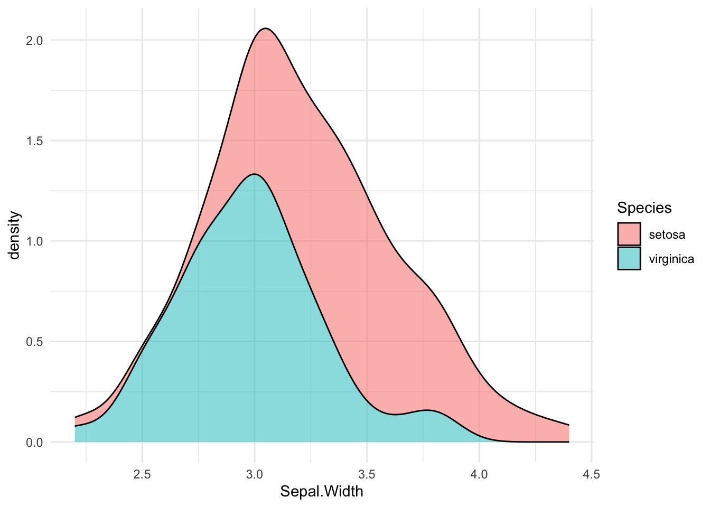
Extracting the dataset you want to compare to the whole and giving different values to the group columns.
Combine two datasets with rbind() function
then… plotting.
ggplot(combined_data, aes(x = Sepal.Width, fill = Group)) +
geom_density(position = "stack", alpha = 0.5) +
labs(title = "Sepal Width distribution (Loses marginal densities)",
subtitle = "Density plot of sepal width distribution of iris overall distribution and setosa species",
x = "Sepal Width (cm)", y = "Density", fill = "") +
scale_fill_manual(values = c("Overall" = "gray", "Setosa" = "blue")) +
theme_minimal() +
theme(legend.position = "bottom")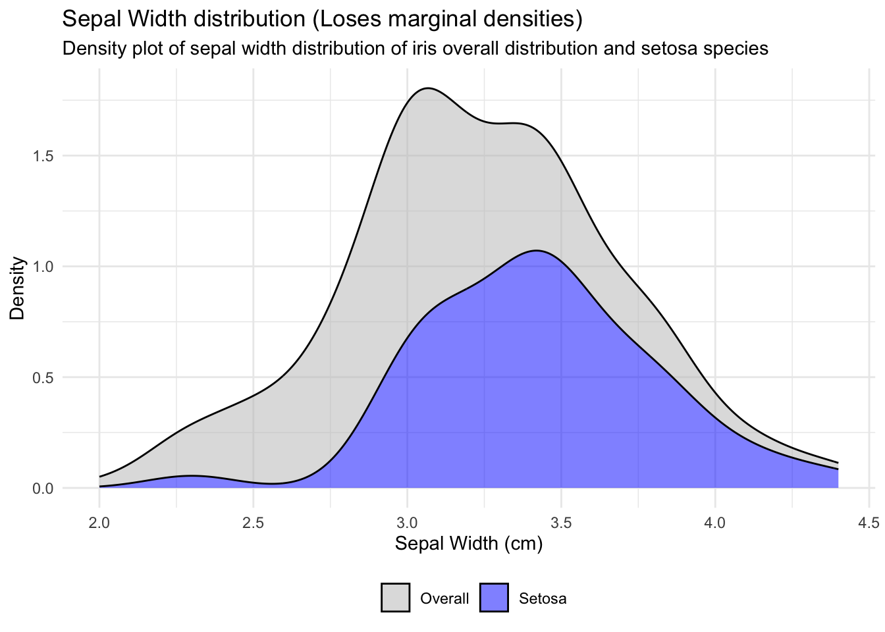
If you wanted to plot Preserves marginal densities, we would type like below: “y = after_stat(count)”.
Loses marginal densities means that the individual distributions of each variable change as a result of some transformation or modeling process, meaning that the marginal distributions around the variables before the transformation are different after the transformation.
Preserves marginal densities, on the other hand, means that the individual distributions of each variable do not change during the transformation or modeling process. This means that the marginal probability distributions of the variables before the transformation remain the same after the transformation.
Loses marginal densities and preserves marginal densities have their own strengths, so you should choose the right one for your situation.
ggplot(combined_data, aes(x = Sepal.Width, y = after_stat(count), fill = Group)) +
geom_density(position = "stack", alpha = 0.5) +
labs(title = "Sepal Width distribution (Preserves marginal densities)",
subtitle = "Density plot of sepal width distribution of iris overall distribution and setosa species",
x = "Sepal Width (cm)", y = "Density * Number of points", fill = "") +
scale_fill_manual(values = c("Overall" = "gray", "Setosa" = "blue")) +
theme_minimal() +
theme(legend.position = "bottom")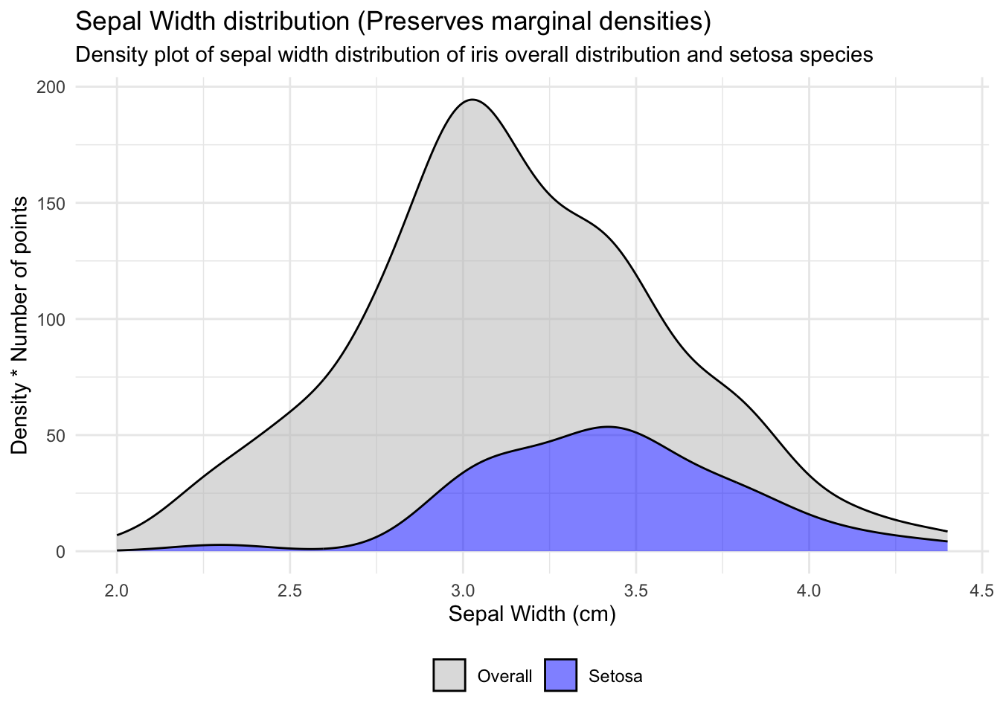
Good job! 👍
END OF POST